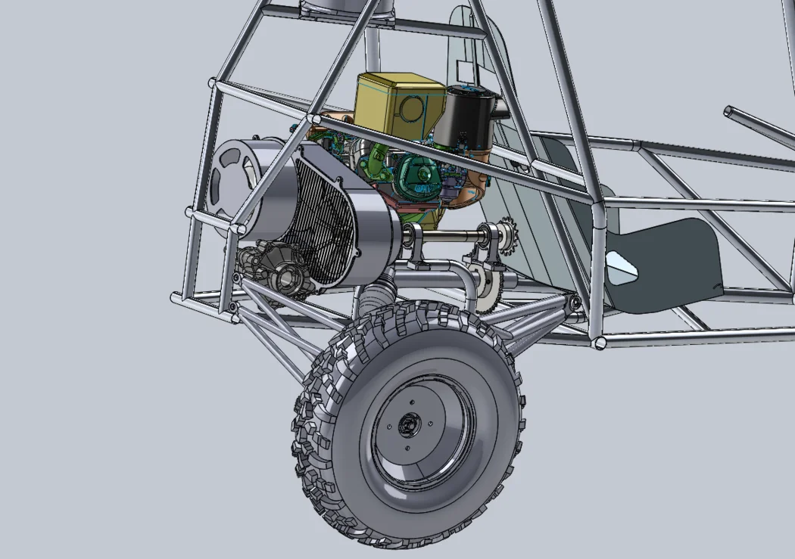

Longhorn Baja Racing
Baja SAE Powertrain
Led a 12-person powertrain group through design, fabrication and validation. Trade studies cut roughly 8 lb from the vehicle.
Motorsports engineering
I’m a mechanical engineering student at UT Austin pursuing a career in motorsports, with hands-on experience in powertrain design, testing and race operations.
Circuit of The Americas · Photo by George Lawrence
Engineering portfolio
Powertrain design, engine testing and manufacturing work.

Longhorn Baja Racing
Led a 12-person powertrain group through design, fabrication and validation. Trade studies cut roughly 8 lb from the vehicle.
UT Austin · Engine testing
Redesigned a Predator 79 cc intake with my team and measured a gain in brake power on a dynamometer we built.
Motorsports
Summer internship · NTT INDYCAR SERIES
Rahal Letterman Lanigan Racing
Visit RLL RacingUT Austin · Baja SAE
Co-founded Longhorn Baja Racing and led powertrain development as the team returned UT Austin to Baja SAE competition.
See the Baja case studyCircuit of The Americas
Worked trackside at MotoGP, NASCAR and the FIA World Endurance Championship, using flags and radio to communicate track conditions.
Read the MotoGP post
About me
I’m studying mechanical engineering at The University of Texas at Austin, with a Business Foundations minor and an expected graduation in December 2027. I’m looking for a motorsports engineering role where I can bring my experience in vehicle systems, fabrication and hands-on validation.
Leading powertrain development for Baja SAE taught me to design around what the team could build and service. Working trackside taught me how much clear communication matters under pressure.
View résumé (PDF)